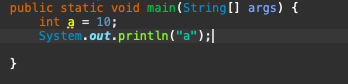
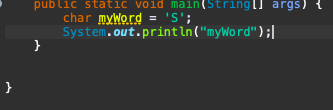

| The HyperText Markup Language, or HTML is the standard markup language for documents designed to be displayed in a web browser. It can be assisted by technologies such as Cascading Style Sheets (CSS) and scripting languages such as JavaScript. |
|---|

| The purpose of a web browser (Chrome, Edge, Firefox, Safari) is to read HTML documents and display them correctly. A browser does not display the HTML tags, but uses them to determine how to display the document: |
|---|
| Comments in Java are the statements that are not executed by the compiler and interpreter. It can be used to provide information or explanation about the variable, method, class or any statement.(How to type java comments)Single-line comments start with two forward slashes ( // ). Any text between // and the end of the line is ignored by Java (will not be executed). |
|---|
| Multi line comments in Java start with /* and end with */. You can comment multiple lines just by placing them between /* and */. |
|---|
| Variable in Java is a data container that saves the data values during Java program execution. Every variable is assigned a data type that designates the type and quantity of value it can hold.Variables are containers for storing data values. In Java, there are different types of variables, for example: String - stores text, such as "Hello". String ... |
|---|
| Int= stores integers (whole numbers),eg 123 or negative 123. Float=Stores stores floating Values with decimals,eg 10.98. String= Stores stores text, such as "Stake" aso We can only type String inside of double quotes. char=Stores stores single characters like 'S','t','k' also We can only type Char inside of Single quotes. boolean=Stores value as true or false Do not be afraid if you do not understand.We will learn about that in the next lesson |
|---|
|  | We will get the output as "10" try it in your editor |
|---|
 |
We will get the output as "Volkswagen" try it in your editor |
|---|
|  | We will get the output as "S" try it in your editor |
|---|
 |
We will get the output as "19.6" try it in your editor
Java Data Types
Non-Primitive Data Type
Long Data Type
Floating Point Types
Double Data Type
Booleans
Character in java
String
Type Casting In Java
Type Casting In JavaType Casting In Java
Widening Type Casting
Widening Type Casting and Narrowing Casting,Converting a higher data type into a lower one is called narrowing type casting. It is also known as explicit conversion or casting up. It is done manually by the programmer. If we do not perform casting then the compiler reports a compile-time error.
|
|---|